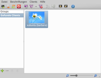
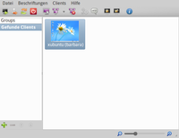

Epoptes
Dieser Artikel wurde für die folgenden Ubuntu-Versionen getestet:
Ubuntu 16.04 Xenial Xerus
Ubuntu 14.04 Trusty Tahr
Zum Verständnis dieses Artikels sind folgende Seiten hilfreich:
Epoptes  (griechisch für Aufpasser oder Aufseher) ist eine spezielle Art der Fernwartung, mit der sich einzelne Linux-PCs oder auch ganze Gruppen bzw. Pools verwalten und fernsteuern lassen. Beliebte Einsatzzwecke sind die Administration entfernter Rechner oder die Nutzung als Unterrichtshilfe innerhalb von EDV-Schulungsräumen. Da das Programm auch für andere Linux-Distributionen verfügbar ist, muss der Einsatz nicht zwangsläufig unter Ubuntu erfolgen. Vielmehr sind beliebige Kombinationen aus Master- und Client-Rechnern denkbar. 
(griechisch für Aufpasser oder Aufseher) ist eine spezielle Art der Fernwartung, mit der sich einzelne Linux-PCs oder auch ganze Gruppen bzw. Pools verwalten und fernsteuern lassen. Beliebte Einsatzzwecke sind die Administration entfernter Rechner oder die Nutzung als Unterrichtshilfe innerhalb von EDV-Schulungsräumen. Da das Programm auch für andere Linux-Distributionen verfügbar ist, muss der Einsatz nicht zwangsläufig unter Ubuntu erfolgen. Vielmehr sind beliebige Kombinationen aus Master- und Client-Rechnern denkbar. 
Die Betriebssysteme Windows und Mac OS X werden dagegen nicht unterstützt. Speziell wenn Windows-Systeme eingebunden werden sollen, ist iTALC die bessere Wahl. Dieses Programm wird aber faktisch nicht mehr weiterentwickelt. Ab Edubuntu 12.04 wurde daher Epoptes der Vorzug gegeben. Besonders nützlich kann das Programm bei LTSP-Installationen sein.
Funktionsweise:
ab Version 0.5.6 kann ssvncviewer als Ersatz für den xvnc4viewer verwendet werden
ab Version 0.5.7 bzw. Ubuntu 14.04 kann auch xtightvncviewer als Ersatz für den xvnc4viewer verwendet werden
Installation¶
 Das Programm ist in den offiziellen Paketquellen enthalten. Folgende Pakete müssen – je nach Verwendungszweck – installiert [1] werden:
Das Programm ist in den offiziellen Paketquellen enthalten. Folgende Pakete müssen – je nach Verwendungszweck – installiert [1] werden:
epoptes (universe, Server-Komponente für den überwachenden Rechner bzw. den Master-PC)
 mit apturl
mit apturl
Paketliste zum Kopieren:
sudo apt-get install epoptes
sudo aptitude install epoptes
epoptes-client (universe, Client-Komponente für die zu überwachenden Rechner bzw. die Client-PCs)
mit apturl
Paketliste zum Kopieren:
sudo apt-get install epoptes-client
sudo aptitude install epoptes-client
PPA¶
Die aktuelle Version ist über das "Personal Package Archiv" (PPA) [2] der Programmentwickler erhältlich.
Adresszeile zum Hinzufügen des PPAs:
ppa:epoptes/ppa
Hinweis!
Zusätzliche Fremdquellen können das System gefährden.
Ein PPA unterstützt nicht zwangsläufig alle Ubuntu-Versionen. Weitere Informationen sind der  PPA-Beschreibung des Eigentümers/Teams epoptes zu entnehmen.
PPA-Beschreibung des Eigentümers/Teams epoptes zu entnehmen.
Damit Pakete aus dem PPA genutzt werden können, müssen die Paketquellen neu eingelesen werden.
Nach dem Aktualisieren der Paketquellen erfolgt die Installation wie oben angegeben.
Konfiguration¶
 Auf der Projektseite steht eine kurze Anleitung bereit, wie man Epoptes in eine LTSP-Installation einbindet. Im Folgenden soll es dagegen darum gehen, einen einzelnen entfernten Client einzubinden.
Auf der Projektseite steht eine kurze Anleitung bereit, wie man Epoptes in eine LTSP-Installation einbindet. Im Folgenden soll es dagegen darum gehen, einen einzelnen entfernten Client einzubinden.
Berechtigte Benutzer¶
Um die Überwachungskonsole von Epoptes nutzen zu können, fügt man auf dem Master-PC den oder die Benutzer zur Gruppe epoptes hinzu (diese Gruppe wird automatisch bei der Installation angelegt) [3][4]:
sudo usermod -aG epoptes BENUTZERNAME newgrp - epoptes
Server¶
Die zentrale Konfigurationsdatei ist unter /etc/default/epoptes zu finden. Sie enthält zwei Abschnitte zur Definition des Kommunikationsports (Standard: 789) und der Gruppe, die die Überwachungskonsole nutzen darf. Möchte man nicht die Voreinstellung epoptes verwenden (siehe vorheriger Abschnitt), trägt man die gewünschte Gruppe mit Root-Rechten im Abschnitt:
# Epoptes server will use the following group for the communications socket. # That means that any user in that group will be able to launch the epoptes UI # and control the clients. SOCKET_GROUP=lehrer
ein [5]. Die Gruppe muss bereits existieren.
Client¶
Ein Epoptes-Client versucht automatisch, den Master-PC unter dem Namen server zu finden. Angenommen, der Master-PC hört auf den Namen master, bearbeitet man die Datei /etc/default/epoptes-client mit Root-Rechten:
# The server which epoptes-client will be connecting to. # If unset, thin client user sessions running on the server will try to connect # to "localhost", while thin client root sessions and fat or standalone clients # will try to connect to "server". # LTSP automatically puts "server" in /etc/hosts for thin and fat clients, # but you'd need to put "server" in DNS manually for standalone clients. SERVER=master
Zwei weitere Einstellungen wie der Kommunikationsport (Standard: 789) und Wake on LAN (WOL) können bei Bedarf ebenfalls angepasst werden.
Wer keinen eigenen DNS- bzw. LTSP-Server betreibt, muss noch die Zuordnung von IP-Adresse und Servername in der Datei /etc/hosts auf dem Client eintragen. Dazu sind wiederum Root-Rechte erforderlich. Beispiel:
# SERVER-IP EPOPTES-SERVERNAME 192.168.1.10 master
Nun wird abschließend das OpenSSL-Zertifikat des Servers heruntergeladen. Dieser Schritt ist immer erforderlich, während eine Namensänderung optional ist:
sudo epoptes-client -c
Wenn der Server kontaktiert werden konnte, erhält man folgende Antwort:
depth=0 C = AU, ST = Some-State, O = Internet Widgits Pty Ltd verify error:num=18:self signed certificate verify return:1 depth=0 C = AU, ST = Some-State, O = Internet Widgits Pty Ltd verify return:1 DONE Successfully fetched certificate from master:789
Dem systemweiten Autostart des Clients wird bei der Installation der Eintrag /etc/xdg/autostart/epoptes-client.desktop hinzugefügt. Daher ist direkt nach der Installation ein Neustart erforderlich, bevor der Client zur Verfügung steht.
Bedienung¶
Bei Ubuntu-Varianten mit einem Anwendungsmenü erfolgt der Start [6] der Überwachungskonsole über den Menü-Eintrag "Internet -> Epoptes", ansonsten verwendet man den Befehl epoptes.
Die zur Verfügung stehenden Fernsteuerungsfunktionen sind über eine Symbolleiste oder den Menüpunkt "Clients" erreichbar.
| Aktionen | ||
| Symbol | Text | Anmerkung |
| "Starte ausgewählte Clients (Wake on LAN)" | Wake on LAN (WOL) muss bereits entsprechend eingerichtet sein. | |
| "Benutzer auf ausgewählten Clients abmelden" | ||
| "Ausgewählte Clients neustarten" | ||
| "Die ausgewählten Clients herunterfahren" | ||
| "Die Steuerung über den Rechner des gewählten Benutzers übernehmen" | Der Menüpunkt "Clients -> Broadcasts" bietet weitere Möglichkeiten. So kann ein Benutzer z.B. nur beobachtet werden, ohne gleich die Kontrolle über den Rechner zu übernehmen. | |
 | "Sende Bildschirminhalt im Vollbild an die ausgewählten Clients" | Vorführmodus - blockiert die Nutzung der Clients. Auch praktisch, um ein zu kleines Beamer-Bild zu kompensieren. |
| "Alle Broadcasts auf allen Clients stoppen" | hebt den Vorführmodus wieder auf | |
| "Führe einen Befehl auf den ausgewählten Clients aus" | URL oder Programmname. Bei Programmen ist die Übergabe eines Dateinamens (inkl. Pfad) möglich. Der praktische Nutzen beschränkt sich allerdings auf grafische Programme (ein Terminalfenster kann zwar geöffnet, aber keine Befehle übergeben werden). | |
| "Eine Nachricht an die ausgewählten Clients senden" | Antworten sind nicht vorgesehen | |
| "Bildschirme der ausgewählten Clients sperren" | setzt einen Bildschirmschoner voraus | |
| "Bildschirme der ausgewählten Clients entsperren" | ||
 | "Zeige Informationen für die ausgewählten Clients" | Client-Typ, Hostname und einige Hardware-Infos: MAC- und IP-Adresse, CPU, RAM, Grafikkarte |
Eher für größere Installationen interessant ist die Möglichkeit, Client-Rechner zu Gruppen zusammenzufassen. Das Programm verwendet den Ordner ~/.config/epoptes/ im Homeverzeichnis des Master-PCs, um Konfigurationsdaten zu speichern.
Problembehebung¶
Firewall¶
Falls eine Firewall eingerichtet sein sollte, ist darauf zu achten, dass der Port 789 freigegeben ist.
Clients werden nicht gefunden¶
Prinzipiell sollten Clients automatisch gefunden werden. Falls das nicht klappt, kann man auf dem Client den Befehl:
sudo epoptes-client SERVERNAME
verwenden. Wenn Epoptes bzw. die Überwachungskonsole auf dem Master-PC SERVERNAME bereits gestartet wurde (notwendig), erfolgt eine entsprechende Rückmeldung zum Verbindungsaufbau, die bei der Fehlersuche weiterhilft (siehe auch Questions and Answers ).
Links¶
Epoptes auf Launchpad
- Fehlerberichte usw.
Epoptes - Alternative für ITalc in reinen Linuxumgebungen
 - Wiki Linuxmuster.net
- Wiki Linuxmuster.netEpoptes – Open source computer lab management and monitoring tool
- Blogbeitrag, 08/2013Monitor And Manage Open Source Computer Lab With Epoptes
- Blogbeitrag, 08/2013Lernstick-Klassenraumverwaltung mit Epoptes
- Blogbeitrag, 03/2013Kinder - Ubuntu kindgerecht einrichten
Edubuntu
 Programmübersicht
Programmübersicht
- Erstellt mit Inyoka
-
 2004 – 2017 ubuntuusers.de • Einige Rechte vorbehalten
2004 – 2017 ubuntuusers.de • Einige Rechte vorbehalten
Lizenz • Kontakt • Datenschutz • Impressum • Serverstatus -
Serverhousing gespendet von